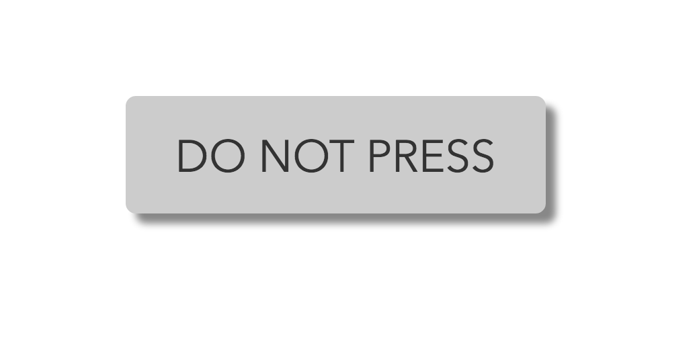

<!---->

<div class="home">
 <ul class="post-list">
    {% for post in site.posts %}
      <li>
          <a class="post-link" href="{{ post.url | prepend: site.baseurl }}">{{ post.title }}</a>
          <span class="post-meta">{{ post.date | date: "%b %-d, %Y" }}</span>
          · <span class="post-meta">{{ post.tags }}</span>
      </li>
    {% endfor %}
  </ul>

  <p class="rss-subscribe">subscribe <a href="{{ "/feed.xml" | prepend: site.baseurl }}">via RSS</a></p>

</div>
